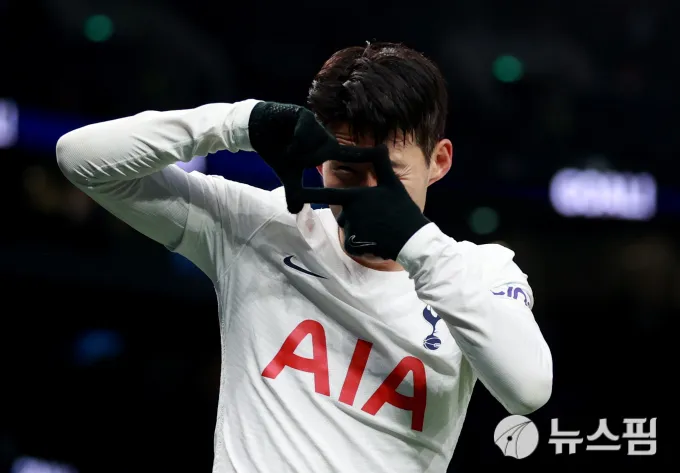

한국
goldenboots
South Korea have Son Heung-min, and China have Wu Lei. The two may not be at the same level in terms of talent or renown, but the Chinese attacker is as important to Marcello Lippi's side as Son is to Paulo Bento's. This was made all the more clear on Wednesday when the teams met in their final group game at the Asian Cup.
